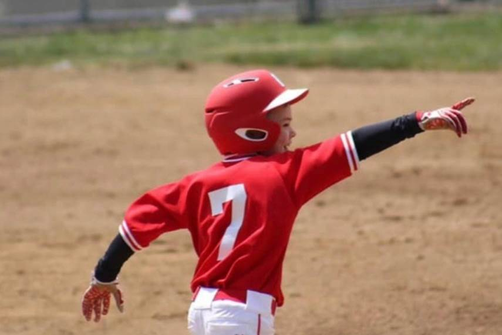

In Loving Memory of Jake Cooper

Do you have broken pieces from past hurts and disappointments? Some things may never be the same after an accident, pandemic or economic failure. Take a deep breath! "A man will endure sickness, but a crushed spirit who can bear it?" Prov.18:14 "The Lord is close to the brokenhearted and saves those who are crushed in spirit." Psalm 34:18. When the wind is taken out of your sail, your spirit is crushed. A broken, crushed spirit screams why did this happen?
"Call unto me and I will answer thee and show you great and mighty things you're not aware of." Jer. 33:3. Life's unexpected turn of events can suddenly crush your spirit. Human hands can care for our body but God can heal our spirit. During a crisis, we are reminded how brief and fragile life can be. A crisis may never make sense especially when we are focused on its finality. Unfortunately there are things in life we cannot control.
"God's love is stronger than death." Song of Solomon 8:6. Perhaps you feel like your damaged goods or overwhelmed with despair. The Bible reminds us God's love for you is everlasting. Before I met Jesus, my life was like a 1000 piece jig-saw puzzle with pieces missing. However, the Lord has filled my life with purpose and meaning. He put a song in my heart.
The truth is things will never be the same. Nonetheless the bleeding will stop, and wounds will heal. You may end up with a permanent scar on your spirit. That's OK. It only means you made it through. Healing is on the way. Raise your head high, look to your heavenly father and lift up your hands to worship Him. "He also was wounded for our transgressions he was bruised for our iniquities the chastisement of our peace was upon him and with his stripes we are healed." Isaiah 53:5. We all have broken pieces. Thank you Lord for using our broken pieces.
The disciples hearts were crushed when Jesus was laid in the tomb. They were in lockdown in their houses. The virus of fear immobilized them, all hope seemed to be gone. Confused, doubtful and yet they stayed close together. Endeavoring to persevere through this turbulent time. They were huddled together behind locked doors when Jesus appeared to all of them.
There is no real safe place in the world without Jesus, but His presence makes the most perilous places manageable. Sticking together as a family and a country huddled at the foot of the cross gives us life and hope. Jesus lived, died and rose from the dead so that you would not be alone. It's not time to be arrogant or proud, but humble. God's word promises "Whosoever shall call upon the name of the Lord shall be delivered" Rom. 10:13 Pray with me; Jesus forgive us for pushing you out of our schools, we print on our money, "In God we trust," But not in our hearts. Today we acknowledge you as Lord and Savior. Forgive us our sins. We put our trust in you. Bring us out of the tomb of self-righteousness. Let us be kind, tenderhearted, forgiving one another even as Christ forgave us. Ephesians 4:32
I believe God is speaking to us. Listen for His voice. In 1st Kings19 the great prophet Elijah struggled with fear and doubt. He quarantined himself in a cave, telling God I'm the only one left. God said go stand on Mount Horeb the mountain of God I want to teach you something. A strong wind (tornado) tore the mountain to pieces, but God was not in the wind. After the wind an earthquake but God was not in the earthquake. After the earthquake a fire, but God was not in the fire. But after the fire a still small voice. His delicate whispering voice said, "What are you doing in a cave? I've got more for you to do! We can learn from a dark place of isolation. It's time to respond to His sweet voice. Emmanuel means God with us. Our real virus in not outside our house, but inside our hearts. As the coronavirus subsides let us Arise in His love and grace. God loves you with an everlasting love. He will not give up on you. It is of the LORD's mercies that we are not consumed, because his compassions fail not. They are new every morning: great is thy faithfulness. Lamentations 3:22,23 He is gracious and abundant in loving-kindness. Let us be one nation under God and actually put our trust in Him. 2nd Chron. 7:14
Pastor Dennis Kozora Sr.